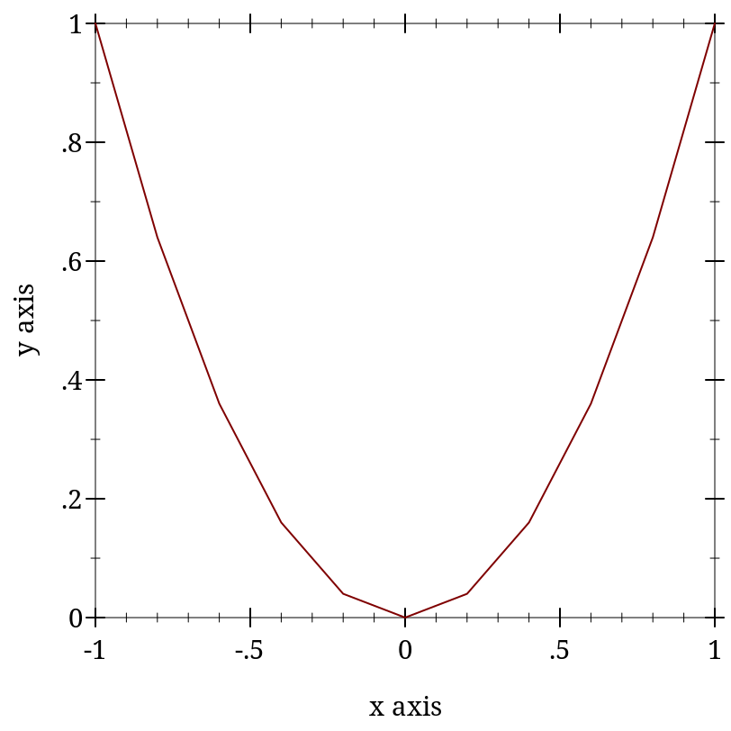
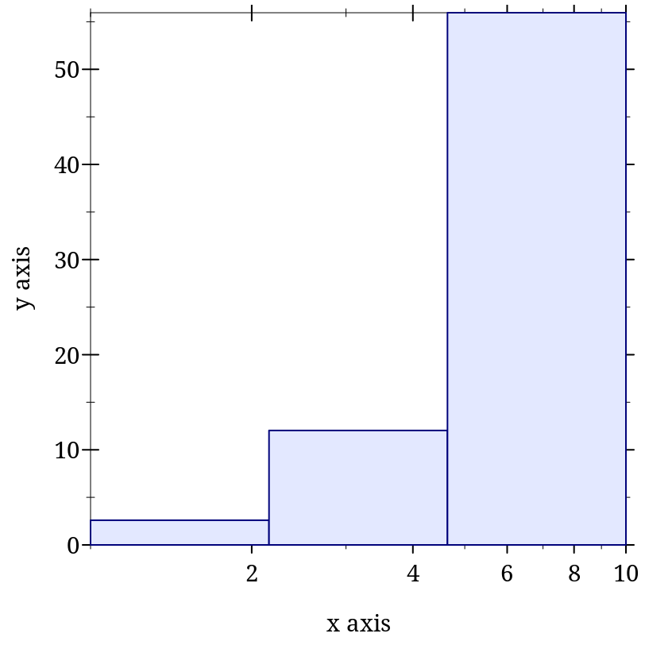
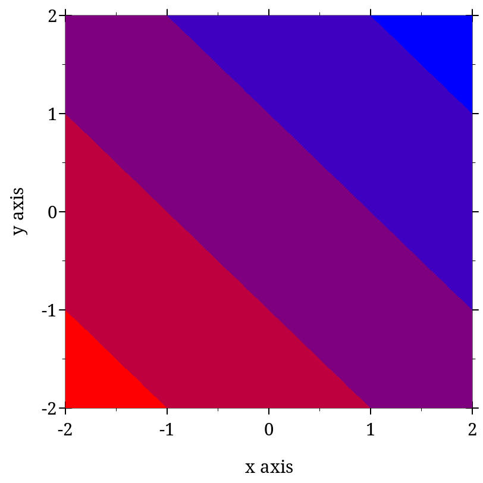
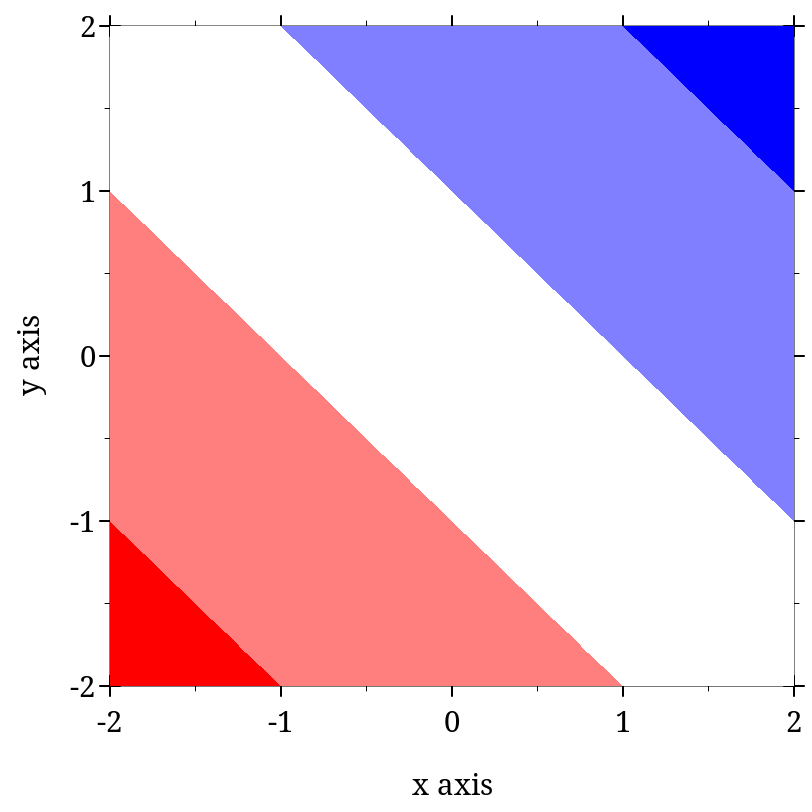
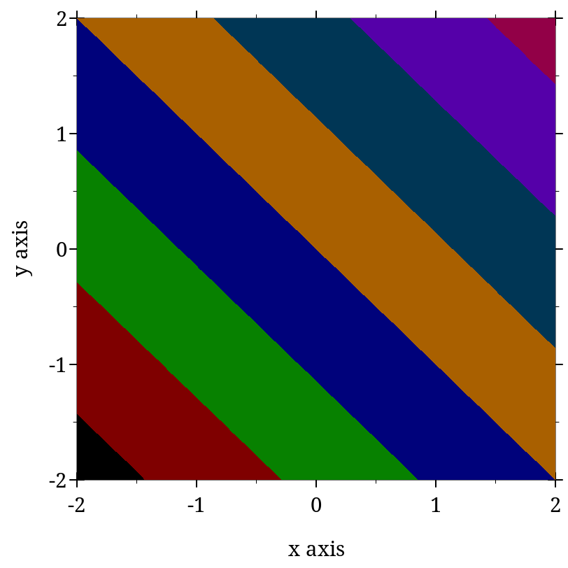
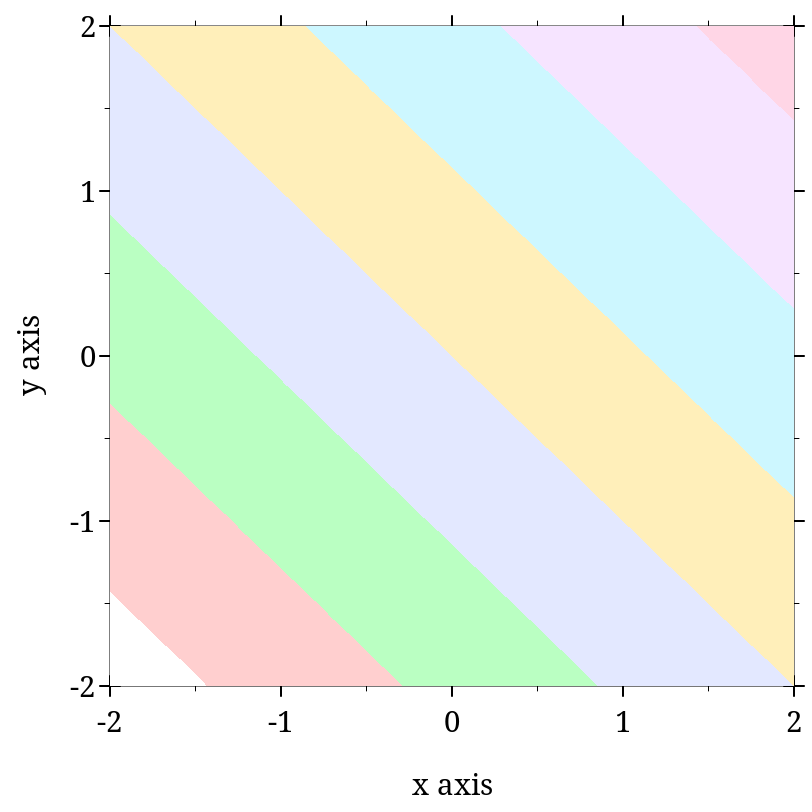

7 Plot Utilities
| (require plot/utils) | package： plot-lib |
7.1 Formatting
函数
(digits-for-range x-min x-max [ base extra-digits]) → exact-integer? x-min : real? x-max : real? base : (and/c exact-integer? (>=/c 2)) = 10 extra-digits : exact-integer? = 3
> (digits-for-range 0.01 0.02) 5
> (digits-for-range 0 100000) -2
函数
(real->plot-label x digits [scientific?]) → string?
x : real? digits : exact-integer? scientific? : boolean? = #t
> (let ([d (digits-for-range 0.01 0.03)]) (real->plot-label 0.02555555 d)) ".02556"
> (real->plot-label 2352343 -2) "2352300"
> (real->plot-label 1000000000.0 4) "1×10⁹"
> (real->plot-label 1000000000.1234 4) "(1×10⁹)+.1234"
函数
(ivl->plot-label i [extra-digits]) → string?
i : ivl? extra-digits : exact-integer? = 3
> (ivl->plot-label (ivl -10.52312 10.99232)) "[-10.52,10.99]"
> (ivl->plot-label (ivl -inf.0 pi)) "[-inf.0,3.141592653589793]"
函数
(->plot-label a [digits]) → string?
a : any/c digits : exact-integer? = 7
函数
(real->string/trunc x e) → string?
x : real? e : exact-integer?
函数
(real->decimal-string* x min-digits [ max-digits]) → string? x : real? min-digits : exact-nonnegative-integer? max-digits : exact-nonnegative-integer? = min-digits
> (real->decimal-string* 1 5 10) "1.00000"
> (real->decimal-string* 1.123456 5 10) "1.123456"
> (real->decimal-string* 1.123456789123456 5 10) "1.1234567891"
函数
(integer->superscript x) → string?
x : exact-integer?
> (integer->superscript -1234567890) "⁻¹²³⁴⁵⁶⁷⁸⁹⁰"
7.2 Sampling
函数
(linear-seq start end num [ #:start? start? #:end? end?]) → (listof real?) start : real? end : real? num : exact-nonnegative-integer? start? : boolean? = #t end? : boolean? = #t
This function is used internally to generate sample points.
> (linear-seq 0 1 5) '(0 1/4 1/2 3/4 1)
> (linear-seq 0 1 5 #:start? #f) '(1/9 1/3 5/9 7/9 1)
> (linear-seq 0 1 5 #:end? #f) '(0 2/9 4/9 2/3 8/9)
> (linear-seq 0 1 5 #:start? #f #:end? #f) '(1/10 3/10 1/2 7/10 9/10)
> (define xs (linear-seq -1 1 11)) > (plot (lines (map vector xs (map sqr xs)))) 
函数
(linear-seq* points num [ #:start? start? #:end? end?]) → (listof real?) points : (listof real?) num : exact-nonnegative-integer? start? : boolean? = #t end? : boolean? = #t
> (linear-seq* '(0 1 2) 5) '(0 1/2 1 3/2 2)
> (linear-seq* '(0 1 2) 6) '(0 2/5 4/5 6/5 8/5 2)
> (linear-seq* '(0 1 0) 5) '(0 1/2 1 1/2 0)
函数
(nonlinear-seq start end num transform [ #:start? start? #:end? end?]) → (listof real?) start : real? end : real? num : exact-nonnegative-integer? transform : axis-transform/c start? : boolean? = #t end? : boolean? = #t
> (linear-seq 1 10 4) '(1 4 7 10)
> (nonlinear-seq 1 10 4 log-transform) '(1.0 2.154434690031884 4.641588833612779 10.000000000000002)
> (parameterize ([plot-x-transform log-transform]) (plot (area-histogram sqr (nonlinear-seq 1 10 4 log-transform)))) 
函数
(kde xs h [ws]) →
(-> real? real?) (or/c rational? #f) (or/c rational? #f) xs : (listof real?) h : (>/c 0) ws : (or/c (listof (>=/c 0)) #f) = #f
7.3 Plot Colors and Styles
函数
(color-seq c1 c2 num [ #:start? start? #:end? end?]) → (listof (list/c real? real? real?)) c1 : color/c c2 : color/c num : exact-nonnegative-integer? start? : boolean? = #t end? : boolean? = #t
> (plot (contour-intervals (λ (x y) (+ x y)) -2 2 -2 2 #:levels 4 #:contour-styles '(transparent) #:colors (color-seq "red" "blue" 5))) 
函数
(color-seq* colors num [ #:start? start? #:end? end?]) → (listof (list/c real? real? real?)) colors : (listof color/c) num : exact-nonnegative-integer? start? : boolean? = #t end? : boolean? = #t
> (plot (contour-intervals (λ (x y) (+ x y)) -2 2 -2 2 #:levels 4 #:contour-styles '(transparent) #:colors (color-seq* '(red white blue) 5))) 
Symbols are converted to strings, and strings are looked up in a color-database<%>. Lists are unchanged, and color% objects are converted straightforwardly.
> (->color 'navy) '(36 36 140)
> (->color "navy") '(36 36 140)
> (->color '(36 36 140)) '(36 36 140)
> (->color (make-object color% 36 36 140)) '(36 36 140)
This function does not convert integers to RGB triplets, because there is no way for it to know whether the color will be used for a pen or for a brush. Use ->pen-color and ->brush-color to convert integers.
函数
(->pen-color c) → (list/c real? real? real?)
c : plot-color/c
Non-integer colors are converted using ->color. Integer colors are chosen for good pairwise contrast, especially between neighbors. Integer colors repeat starting with 128.
> (equal? (->pen-color 0) (->pen-color 8)) #f
> (plot (contour-intervals (λ (x y) (+ x y)) -2 2 -2 2 #:levels 7 #:contour-styles '(transparent) #:colors (map ->pen-color (build-list 8 values)))) 
函数
(->brush-color c) → (list/c real? real? real?)
c : plot-color/c
Non-integer colors are converted using ->color. Integer colors are chosen for good pairwise contrast, especially between neighbors. Integer colors repeat starting with 128.
> (equal? (->brush-color 0) (->brush-color 8)) #f
> (plot (contour-intervals (λ (x y) (+ x y)) -2 2 -2 2 #:levels 7 #:contour-styles '(transparent) #:colors (map ->brush-color (build-list 8 values)))) 
In the above example, mapping ->brush-color over the list is actually unnecessary, because contour-intervals uses ->brush-color internally to convert fill colors.
> (plot (function-interval sin (λ (x) 0) -4 4 #:color (->pen-color 3) #:line1-color (->brush-color 3) #:line2-color (->brush-color 3) #:line1-width 4 #:line2-width 4))

函数
(->pen-style s) → symbol?
s : plot-pen-style/c
> (eq? (->pen-style 0) (->pen-style 5)) #t
> (map ->pen-style '(0 1 2 3 4)) '(solid dot long-dash short-dash dot-dash)
函数
(->brush-style s) → symbol?
s : plot-brush-style/c
> (eq? (->brush-style 0) (->brush-style 7)) #t
> (map ->brush-style '(0 1 2 3)) '(solid bdiagonal-hatch fdiagonal-hatch crossdiag-hatch)
> (map ->brush-style '(4 5 6)) '(horizontal-hatch vertical-hatch cross-hatch)
7.4 Plot-Specific Math
7.4.1 Real Functions
函数
(ceiling-log/base b x) → exact-integer?
b : (and/c exact-integer? (>=/c 2)) x : (>/c 0)
> (ceiling (/ (log 100) (log 10))) 2.0
> (ceiling-log/base 10 100) 2
> (ceiling (/ (log 1/1000) (log 10))) -2.0
> (ceiling-log/base 10 1/1000) -3
函数
(floor-log/base b x) → exact-integer?
b : (and/c exact-integer? (>=/c 2)) x : (>/c 0)
> (floor (/ (log 100) (log 10))) 2.0
> (floor-log/base 10 100) 2
> (floor (/ (log 1000) (log 10))) 2.0
> (floor-log/base 10 1000) 3
函数
(maybe-inexact->exact x) → (or/c rational? #f)
x : (or/c rational? #f)
7.4.2 Vector Functions
函数
v1 : (vectorof real?) v2 : (vectorof real?)
函数
v1 : (vectorof real?) v2 : (vectorof real?)
函数
v : (vectorof real?)
函数
v : (vectorof real?) c : real?
函数
v : (vectorof real?) c : real?
函数
(vnormalize v) → (vectorof real?)
v : (vectorof real?)
> (vnormalize #(1 1 0)) '#(0.7071067811865475 0.7071067811865475 0)
> (vnormalize #(1 1 1)) '#(0.5773502691896258 0.5773502691896258 0.5773502691896258)
> (vnormalize #(0 0 0.0)) '#(0 0 0.0)
> (vcenter '(#(1 1) #(2 2))) '#(3/2 3/2)
函数
(vrational? v) → boolean?
v : (vectorof real?)
> (vrational? #(1 2)) #t
> (vrational? #(+inf.0 2)) #f
> (vrational? #(#f 1)) vrational?: contract violation
expected: Real
given: #f
in: an element of
the 1st argument of
(-> (vectorof Real) any)
contract from:
<pkgs>/plot-lib/plot/private/common/math.rkt
blaming: top-level
(assuming the contract is correct)
at: <pkgs>/plot-lib/plot/private/common/math.rkt:304.9
7.4.3 Intervals and Interval Functions
> (ivl -inf.0 0) (ivl -inf.0 0)
> (ivl 0 +inf.0) (ivl 0 +inf.0)
> (ivl -inf.0 +inf.0) (ivl -inf.0 +inf.0)
Functions that return rectangle renderers, such as rectangles and discrete-histogram3d, accept vectors of ivls as arguments. The ivl struct type is also provided by plot so users of such renderers do not have to require plot/utils.
函数
(rational-ivl? i) → boolean?
i : any/c
> (map rational-ivl? (list (ivl -1 1) (ivl -inf.0 2) 'bob)) '(#t #f #f)
函数
(bounds->intervals xs) → (listof ivl?)
xs : (listof real?)
> (bounds->intervals (linear-seq 0 1 5)) (list (ivl 0 1/4) (ivl 1/4 1/2) (ivl 1/2 3/4) (ivl 3/4 1))
函数
(clamp-real x i) → real?
x : real? i : ivl?
7.5 Dates and Times
函数
(datetime->real x) → real?
x : (or/c plot-time? date? date*? sql-date? sql-time? sql-timestamp?)
For dates, the value returned is the number of seconds since a system-dependent UTC epoch. See date-ticks for more information.
To plot a time series using dates pulled from an SQL database, simply set the relevant axis ticks (probably plot-x-ticks) to date-ticks, and convert the dates to seconds using datetime->real before passing them to lines. To keep time zone offsets from influencing the plot, set them to 0 first.
struct
(struct plot-time (second minute hour day) #:extra-constructor-name make-plot-time) second : (and/c (>=/c 0) (</c 60)) minute : (integer-in 0 59) hour : (integer-in 0 23) day : exact-integer?
Plot (specifically time-ticks) uses plot-time internally to format times, but because renderer-producing functions require only real values, user code should not need it. It is provided just in case.
函数
(plot-time->seconds t) → real?
t : plot-time?
函数
(seconds->plot-time s) → plot-time?
s : real?
> (define (plot-time+ t1 t2) (seconds->plot-time (+ (plot-time->seconds t1) (plot-time->seconds t2))))
> (plot-time+ (plot-time 32 0 12 1) (plot-time 32 0 14 1)) (plot-time 4 1 2 3)